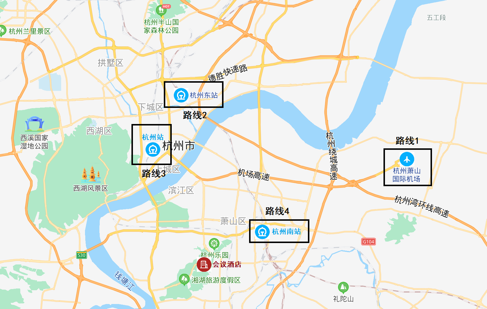

会场：杭州娃哈哈湘湖度假酒店
酒店地址
杭州市萧山区湘湖路567号
交通路线

路线1：从杭州萧山国际机场
- 打车29公里，耗时约50分钟；
- 或乘地铁7号线至建设三路站，站内换乘地铁二号线至潘水站，A2出口出站，于潘水公交车站换乘707路公交车至越风楼站，耗时约1小时17分；
- 或乘地铁7号线至建设三路站，站内换乘地铁二号线至人民路站，A2出口出站，于萧山鞋城站换乘716路公交车至越风楼站，耗时约1小时18分。
路线2：从杭州东站
- 打车22公里，耗时约50分钟；
- 或乘地铁1号线至湘湖站，C出口出站，出站后于地铁湘湖站西站换乘775或706路公交车至越风楼站，耗时约1小时5分；
- 或乘地铁1号线至湘湖站，E出口出站，出站后于地铁湘湖站东站换乘781路公交车至越风楼站，耗时约1小时6分。
路线3：从杭州站
- 打车17公里，耗时约35分钟；
- 或乘地铁1号线至湘湖站，C出口出站，出站后于地铁湘湖站西站换乘775或706路公交车至越风楼站，耗时约49分钟；
- 或乘地铁1号线至湘湖站，E出口出站，出站后于地铁湘湖站东站换乘781路公交车至越风楼站，耗时约51分钟。
路线4：从杭州南站
- 打车8.1公里，耗时约23分钟
- 或于火车南站西站乘707路公交车至越风楼站，耗时约57分钟。